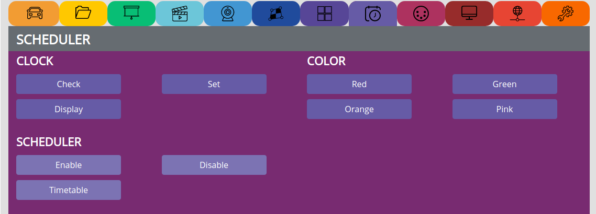

SCHEDULER¶
see video tutorial: https://www.pocketvj.com/pocketvj-rtc
CLOCK¶
Check => Check internal date and time
Display => Show a clock on screen
Set => Sets the correct time from the user accessing the PocketVJ, might take 2 attempts
TIMETABLE¶
Show => to make sure the timetable is loaded to PocketVJ, if it does not appear it is likely you forgot to add an empty last line…
Note
make sure the last command is an empty line! otherwise it will not work as expected!!
Every task seen in the Control Panel can be scheduled!
Example:
Starts playing all videofiles on 08:01pm resp. 20:01 o’clock:
01 20 * * * /var/www/sync/startmaster
Commands:
Stop: /var/www/sync/stopall
Play video 01_* once: /var/www/sync/startmasterone01
Beameron: /var/www/sync/beameron
Beameroff: /var/www/sync/beameroff
Start Mapper: /var/www/sync/relaunchmapper
Note
startmaster01 goes up to startmaster99
startmasterone01 goes up to startmasterone99 (slideshow feature only until 20)
startless01 goes up to startless12 (loops without sync)
startlesseronce01 goes up to startlesseronce20 (once without sync)
If you need from once specific command more scripts, just copy and edit them in /var/www/sync/
or open an issue on github to ask for more scripts.